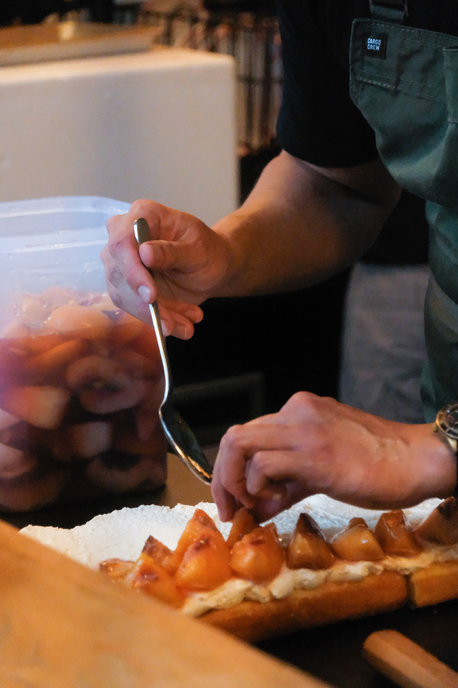
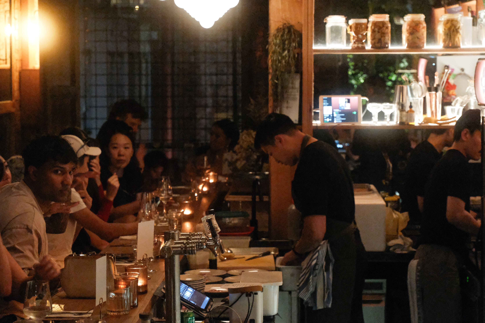

In collaboration with Aster Bar x MasterChef David Tan
A five-course journey with David Tan, MasterChef 2024 finalist. Held in a reimagined space of light and sound, this intimate dinner invites you into a story of reinvention, told through flavour, movement, and mood. Each course, a chapter. Each detail, intentional. A celebration of courage, curiosity, and becoming.
From cancer researcher to MasterChef finalist, David Tan blends science and storytelling into his food. Known for his signature Squash Soup with Cocoa Cream, his dishes explore flavour as feeling — layered, precise, and quietly bold.

